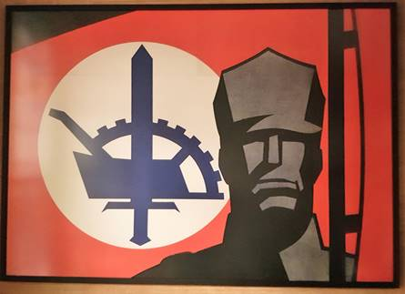
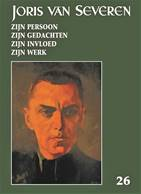

> nieuwsbrief JORIS VAN SEVEREN > JAAR 2023 - NR.2
Inhoud

Kaftillustratie: Bij
het
informatiecentrum Identiteit werd affiche afgebeeld op voorkant
binnengebracht. We zijn op zoek naar de ontwerper van deze
affiche. Afgaand op het uniform vermoedelijk ontworpen voor
1934.
Even herinneren. De jaarwisseling heeft zich inmiddels
voltrokken – en het hernieuwen van de ledenbijdragen voor 2023
verliep naar wens. Wie dit tot nog toe naliet kan dit alsnog
doen. Dankzij een zuinig beheer blijft het ons mogelijk om,
niettegenstaande alweer gestegen druk- en portkosten, de
minimumbijdrage te behouden op 29 €. In ruil daarvoor verzekeren
we u de stipte toezending van het nieuwe Jaarboek
Joris van Severen – het 27e al – in
de meimaand en van de vier nummers van ons kwartaalblad Nieuwsbrief
Joris van Severen. Vanaf het bedrag
van 35 € boeken we u met dank als steunend lid. Vereffening
graag via onze rekening BE29 4650
2267 2164 op naam van het Joris van Severen Instituut,
Izegem.
Beste vrienden, kennissen en
volgers van Maurits Cailliau
Dit
najaar
komt het Liber Amicorum voor
Maurits Cailliau uit. Het is een selectie van beschrijvingen,
interviews, gedichten en herinneringen aan Maurits Cailliau en
zijn betekenis voor de Vlaamse en Heel-Nederlandse beweging. U
kunt deelgenoot worden aan deze hulde door een voorintekening op
het boek. De lijst van voorintekenaars wordt opgenomen in het
boek. U kunt voorintekenen voor dit hardback boek door voor 30
juni 2023 het bedrag van 28 Euro (inclusief verzendingskosten)
over te maken op bankrekening BE29 4650 2267 2164 (Joris van
Severen Instituut) onder vermelding van LA MC en uw naam.
Intekenaars worden uitgenodigd op de boekvoorstelling en viering
van Maurits Cailliau. Met vriendelijke groet, Ruud Bruyns, Wido
Bourel, Bert Dekeyzer
Beknopte geschiedenis van de
Dietse Militie – Dinaso Militanten Orde
Ruud
Bruijns zocht het voorhanden beeldmateriaal bijeen over deze
verweerkorpsen. Het resultaat vormt een gebald overzicht van hun
geschiedenis – met +/- 5 minuten beeldmateriaal – en valt te
consulteren en te genieten via onderstaande ‘link’: https://www.dropbox.com/sh/8yfslvuqpb1422m/AAAxteDcsZztMGfPPT9qlwJXa?dl=0
of via youtube:https://youtu.be/46HForkPdNs
Inhoud Jaarboek Joris van Severen 27 (2023)
De redactie van
het nieuwe Jaarboek Joris van
Severen kon recent afgesloten
worden, waarbij volgende bijdragen weerhouden werden:
Met deze aflevering zijn
we aan het 27e Jaarboek Joris van
Severen toe. We brengen andermaal een ruime
verscheidenheid aan bijdragen die op een of andere wijze
inzoomen op de ondertitel van deze reeks: Joris van Severen,
zijn persoon, zijn ideeën, zijn invloed en zijn werk. Een
overzicht:
Dank zij de recente
voortreffelijke biografie van Willem Huberts over Wouter Lutkie
zijn we op de hoogte van diens bijwijlen intensieve contacten
met geestesgenoten in de zuidelijke Nederlanden. In zijn essay De relatie Wouter Lutkie, Joris van
Severen en het Verdinaso gaat Ruud Bruijns dieper op dit thema
in, dat ook na de oorlog een vervolg kende rond o.a. Louis
Gueuning.
Pieter
Jan Verstraete kon de hand leggen op en collectie
van het eerder zeldzaam te vinden weekblad ‘Ik zal
handhaven!’ In De korte
geschiedenis van het weekblad van het Verdinaso Nederland
gaat hij na welke speerpunten in deze door
Ernst Voorhoeve geredigeerde publicatie centraal stonden.
In Pol le Roy, dinaso en dichter
schetst Jan Creve een
biografisch portret van de vooraanstaande dinaso die met de
oorlog “aan de verkeerde kant van de geschiedenis” kwam te
staan, maar ergens toch steeds weer een dinaso-reflex behield.
De auteur besteedt ook veel aandacht aan het dichterschap van Le
Roy dat, ten gevolge van z’n oorlogsverleden slechts laattijdig
aan erkenning toekwam.
Met Aan mijn kinderen legde
de vooraanstaande Noord Nederlandse Dinaso Henri Bruning destijds ten
overstaan van zijn kinderen verantwoording af over z’n politieke
inzichten. Ook hij verzeilde tijdens de Tweede Wereldoorlog in
de collaboratie met de bezetter, evenwel met behoud van wat het
Verdinaso hem bijgebracht had omtrent mens en samenleving.
Henk Tijssen verdiepte zich in de geschiedenis van
de Friese beweging i.c. Tsjalling
Terpstra en het Frysk Nasjonael Front (FNF).
Voor de meesten van ons
betekent deze thematiek het betreden van een terrein waarover
we tot nog toe heel weinig afwisten, ook al werd daar een
ideëel terrein betreden dat in heel wat parallel liep aan wat
in het Verdinaso beleden werd.
Na de Tweede
Wereldoorlog werden meerdere pogingen ondernomen om de politieke
en maatschappelijke idealen van het vooroorlogse Verdinaso nieuw
leven in te blazen. De
Solidaristische Beweging (1974-1979) was
er daar een van. Hans Nelis
volbracht het er de geschiedenis van te boekstaven.
Roni
Ranke,
een pseudoniem van Ronald Evrard, heeft al meerdere dichtbundels
op zijn actief. Aan zijn aan Joris van
Severen gewijd gedicht om dit 27e
Joris van Severen jaarboek waardig af te sluiten.
Mocht u de
ledenbijdrage voor 2023 nog niet vereffend hebben, dan kan
bovenstaande kennisname u er allicht van overtuigen dat ook
ons 27e jaarboek beslist weer de moeite waard
wordt. Alle gegevens daaromtrent vindt u op de voorafgaande
pagina. Het jaarboek zal in de loop van de meimaand
verschijnen.
PS: een vlotte
vereffening van de ledenbijdragen stelt ons meteen beter in
staat de oplage van het jaarboek te bepalen.
Orde-kruis va de door Louis Gueuning
gestichte Joris van Severen Orde
Luc Pauwels
De jonge Louis
Gueuning, met
Verdinaso-speldje
op
z’n revers
5 maart 1898. Geboorte in ’s-Gravenbrakel
(Henegouwen) van Louis Gueuning,
classicus, school-directeur, maar vooral bekend als leider van
de Romaanse gouwen (Wallonië) in het Verdinaso van Joris van
Severen. Samen met enkele Waalse vrienden, onder wie Jacques
Boseret, treedt hij, als hartstochtelijk voorstander van de
historische eenheid van de Nederlanden, in maart 1939 toe tot
het Verbond van Dietse Nationaal Solidaristen (Verdinaso). Na op
Van Severen op 20 mei 1940 te Abbeville blijft hij ijveren voor
de Dinaso-ideeën.
Hij weigert iedere vorm van
collaboratie en werkt clandestien verder in strikte politieke
neutraliteit. In november 1941 st de moord icht hij de Joris van
Severen-Orde, een geheime organisatie met een dubbel doel:
mensen vormen die doordrongen waren van de ideeën van Van
Severen, en ijveren voor de eenheid en de onafhankelijkheid van
de Nederlanden, zonder een keuze te maken tussen de
oorlogvoerende kampen.
Hij specialiseert zich, samen met
André Belmans en anderen, in het ondergronds uitgeven van vele
geschriften en het organiseren van vormingscursussen in
Dinaso-geest. Bij de bevrijding worden zijn woning en zijn
school verwoest. Hij wordt door de repressie getroffen en het
duurt tot 1952 vooraleer hij in al zijn rechten wordt hersteld.
Ondertussen had hij in een aantal geschriften uiting gegeven aan
zijn koningsgezinde (Leopoldistische) overtuiging.
Louis Gueuning is een van de
oud-Dinaso’s die na de Tweede Wereldoorlog probeert een nieuwe
politieke beweging op te richten in het verlengde van het
Verdinaso. Hij had gezorgd voor de herbegraving van Joris van
Severen en Jan Ryckoort in Abbeville en de oprichting van het
grafmonument. Hij wordt in ruime kring gerespecteerd, maar
begaat enkele kapitale blunders. Hij blijft bij het Belgische
koningshuis zweren en heeft niet door dat Boudewijn I geen
Leopold III was.
Hij publiceert het tijdschrift De Uitweg. Zijn
belangrijkste vereniging geeft hij de meest kleurloze naam die
je kan bedenken, de Organisatie voor het Algemeen Welzijn (OAW).
Luc Delafortrie vroeg zich af of Gueuning het OCMW wilde
overnemen. Naaste medewerkers van Gueuning zoals Jef Werkers en
Vik Eggermont waren veel meer bij de zaak. De eerste is de
oprichter van het Nationaal Studie- en Documentatiecentrum Joris
van Severen in Aartselaar en jarenlang de uitgever van het
driemaandelijkse Ter waarheid
over Joris van Severen. De tweede geeft sinds
1964 met zijn Werkgroep Delta het maandblad Delta uit, later
voortgezet als Werkgemeenschap de Lage Landen en de
elektronische Brief uit de
Rijn, Maas, Schelde Delta. Louis Gueuning zelf
overlijdt in 1971 op de leeftijd van 72.
____________________
Bron: 5
maart. Louis Gueuning geboren, Waals Dinasoman - Doorbraak.be
Illustratie
bovenaan: Het Ordekruis
van de Joris van Severen Orde
Arnold Meijer, portret van een ontgoochelde
fascist
Een
zonderling fenomeen in het vooroorlogse Nederland: Arnold Meijer
(1905-1965), een fascist die er volledig voor uitkwam. Bovendien
erg katholiek en bijzonder op Vlaanderen gesteld. André van
Noort (°1977), archivaris in Leiden (Noord-Holland) schreef een
echt boeiende biografie over de man. Luc Pauwels sprak
met hem.
Vooraleer Arnold Meijer politicus werd,
wilde hij priester worden. Was dat achteraf gezien
niet beter geweest voor hem?
Het
was inderdaad beter geweest als hij priester geworden was, grote
teleurstellingen hadden hem dan bespaard gebleven. In december
1941 werd zijn partij Nationaal Front door de Duitse
bezetters verboden. Hij mocht zich niet meer met politiek
bezighouden. Dat was voor hem een grote tegenvaller. Na de oorlog wilde hij de politiek weer in, maar zijn
arrestatie verhinderde dat. Hiermee komen we bij een nieuwe
grote teleurstelling: zijn berechting en straf. Meijer dacht
alles voor het vaderland gedaan te hebben, maar daarover werd
door de rechters toch anders gedacht. Hij werd uiteindelijk
veroordeeld tot een gevangenisstraf van vier jaar met tien jaar
ontzetting uit beide kiesrechten wegens collaboratie. Hij mocht
zich voorlopig niet met politiek bezighouden.
Waarom stichtte Meijer zijn Zwart Front? Hij
had evengoed kunnen aansluiten bij de reeds bestaande
Algemene Nederlandse Fascistenbond (ANFB) van Jan Baars…
Meijer
heeft Zwart Front niet gesticht. Hij werd begin 1934
door enige ANFB-leden uit Oisterwijk, Boxtel en ’s-Hertogenbosch
uit Frankrijk gehaald om propagandaleider van de ANFB in
Noord-Brabant en Zeeland te worden. De zuidelijke afdelingen van
de ANFB gaven toen een weekblad met de naam Zwart Front
uit.
Op 5
mei 1934 werd op een ledenvergadering besloten de ANFB te
splitsen in twee federatief verbonden stichtingen: De
Vuurslag voor de provincies boven de grote rivieren onder
leiding van jonkheer R. Groeninx van Zoelen en Zwart Front voor
de zuidelijke provincies onder leiding van Arnold Meijer.
Groeninx van Zoelen en Meijer kregen ruzie over de koers. Meijer
belichaamde de radicale richting, terwijl Groeninx de gematigde
groepen vertegenwoordigde. In de zomer van 1934 hield De
Vuurslag op te bestaan, een aantal noordelijke afdelingen
sloten zich bij Zwart Front aan. Meijer was nu de enige leider.
Wanneer kwam bij het Zwart Front de
ondertitel ‘Nederlandse Volksfascisme’ in voege en wat
betekende ‘volksfascisme’ precies?
Zoals
gezegd vond op 5 mei 1934 een ledenvergadering plaats waarbij de
ANFB in twee stichtingen verdeeld werd. Beide organisaties
vielen onder een kopstichting met de naam Nederlands
Volksfascisme. Volksfascisme ging uit van de gemeenschap
onder leiding van een krachtig overheidsgezag en hekelde het
‘demo-liberale systeem’ waarin het individu centraal stond.
Meijer en zijn Zwart Front hekelden de parlementaire democratie,
waarin de massa de dienst uitmaakte. De massa was niet geschikt
om beslissingen te nemen, dat moest worden overgelaten aan
deskundigen, een elite van ‘aristoi’. Daarbij geloofde Meijer in
een corporatieve ordening. Van klassenstrijd moest hij niets
hebben. Werkgever en werknemers moesten zoveel mogelijk
samenwerken.
Hoe stond Meijer tegenover Hitler en het
nationaalsocialisme?
Meijer
moest niets hebben van Hitler en zijn nationaalsocialisme. Hij
was meer georiënteerd op het fascisme van Mussolini. Daarbij
moet worden opgemerkt dat Meijer als vanouds niet veel met
Duitsland op had, zijn interesse lag meer in de Latijnse landen.
Een belangrijke pijler van het nationaalsocialisme was de
rassenleer met als resultaat de uitroeiing van de Joden. Meijer
was antisemiet en liet niet na de Joden belachelijk te maken.
Hij beschouwde de Joden als vreemdelingen, die slechts het
gastrecht verdienden, maar van Jodenvervolging moest hij niets
hebben.
Hoe reageerde Arnold Meijer op de Duitse
inval van 1940?
Het
antwoord op deze vraag is te vinden in De Weg nr. 4 van
23 mei 1940. De Weg was het weekblad van Nationaal
Front, de partij van Arnold Meijer in haar nieuwe
gedaante. Meijer reageerde hierin op de Duitse inval. Hij
hekelde de politici en leiders die op de vlucht geslagen waren
en eerde de soldaten die tegen de Duitsers hadden gevochten. De
Duitse inval was volgens hem de schuld van de democratie en de
kabinetten die Nederland geleid hadden. Hij was blij dat het
Nederlandse volk weer één was en er waren nieuwe kansen gekomen
om Heel-Nederland te stichten, de hereniging met Vlaanderen.
Over de bezetting was hij kort: er was niets aan te doen. Beter
was zich erbij neer te leggen.
Meijer
was aanvankelijk enthousiast over de Duitse bezetters, maar die
houding sloeg snel om toen zij hem begonnen tegen te werken. De
Duitsers wilden gelijkschakeling, zij wilden Nationaal Front
samenvoegen met de Nationaal-Socialistische Beweging
(NSB) van Anton Mussert, maar Meijer weigerde hieraan mee te
werken. De Duitsers vonden Meijer te Nederlands en ook te
katholiek. Vooral Meijers uiteindelijke weigering mee te werken
aan een Nederlands legioen tegen de Sovjet-Unie zette bij de
Duitsers kwaad bloed. Het gevolg was dat ze Nationaal Front in
december 1941 verboden.
Hoe kunnen we Meijers relatie met Vlaanderen
beschrijven? Met wie had hij voornamelijk contact in
Vlaanderen?
Meijer
was voor Heel-Nederland, Nederland en Vlaanderen moesten één
worden. Meijer correspondeerde vanaf 1934 met mensen uit de
Vlaams-nationale beweging. Die contacten waren zeer divers.
Meijer correspondeerde o.a. met Wies Moens, las Vlaamse
tijdschriften en verspreidde het blad Zwart Front in
Vlaanderen. Hij nodigde Vlamingen uit om in Nederland te spreken
en andersom ging hij naar Vlaanderen om lezingen te houden.
Verder bezocht hij diverse activiteiten in Vlaanderen zoals de
Landdag van het Vlaams Nationaal Verbond (VNV) waar hij Karel
Waternaux ontmoette en de IJzerbedevaart te Diksmuide. Meijer
had contact met de leider van het VNV Staf de Clercq. Ook het
VNV was voor Groot-Nederland, maar dan moest Vlaanderen eerst
zelfstandig worden. Je zou denken dat hij ook contact had met
Joris van Severen, de leider van het Verbond van Dietsche
Nationaal Solidaristen (Verdinaso). Toch moest Meijer er niets
van hem hebben. Van Severen was voorstander van een Dietse
volksstaat: Nederland, België en Luxemburg moest één worden,
zoals voor 1830, en dat ging Meijer te ver.
Hoe diep ging de Heel-Nederlandse oriëntatie
van zijn beweging?
In
1935 schreef Meijer zijn partijprogramma Wat wil Zwart Front.
Hij maakte hierin propaganda voor Heel-Nederland, want natie en
staat moesten zoveel mogelijk samenvallen. Hij noemde de
Vlamingen ‘stamgenoten’, maar eerst moest Zwart Front de macht
veroveren. Meijer deed zijn best om de Groot-Nederland-gedachte
te promoten en of hij succes had, kan je in mijn boek lezen.
Naar verluid werd Meijer - volgens zijn wens
- begraven met een Vlaamse leeuwenvlag op zijn kist. Waarom?
Na de
Tweede Wereldoorlog bleef Meijer belangstelling houden voor
Vlaanderen. Hij had nog steeds contacten met allerlei Vlamingen
zoals Herman Wagemans, de secretaris van het Algemeen
Nederlands Zangverbond (ANZ) te Antwerpen en medeoprichter
- later ook volksvertegenwoordiger - van de Volksunie.
Meijer correspondeerde met Wagemans over de uitwisseling van
zangkoren. Het ANZ organiseerde ieder jaar het Vlaams
Nationaal Zangfeest. Meijer kwam er graag. Hij bezocht ook
de Frans-Vlaamse Cultuurdagen georganiseerd door het Komitee
Frans-Vlaanderen. Meijers liefde voor Vlaanderen ging heel
ver. Hij schreef aan de Vlaams-nationale priester Jean-Marie
Gantois dat zijn hotel (‘De Rosep’ in Oisterwijk) het enige was
waar naast de Nederlandse en Brabantse vlag ook de Vlaamse Leeuw
wapperde en hij hoopte dat het een trefpunt van Vlamingen zou
worden en dat gebeurde ook. Vlak voor zijn dood zou Meijer op
het Vlaams Nationaal Zangfeest te Antwerpen zeggen ‘Zo de
redding voor ons volk er komt, zal het vanuit Vlaanderen moeten
gebeuren’.
___________________
Bron: https://Arnold
Meijer,
portret van een ontgoochelde fascist - Doorbraak.be
Louis Gueuning – Jef van Bilsen
Bij de
voorbereiding van een bijdrage voor het Jaarboek 2024 stootte
Hans Nelis op een geschreven opdracht in het ‘Liber amicorum
Louis Gueuning 70’, dat hij in de bibliotheek van de
Universiteit Gent ontleend had. De geadresseerde was Jef van
Bilsen, en de opdracht, die Gueuning schreef, was een
“témoignage d’amitié”. Hans legde deze ‘ontdekking’ voor aan Vik
Eggermont, met wie hij voor zijn essay intensief samenwerkt.
Diens commentaar was: “Het toont aan
dat er een verzoening is tot stand gekomen tussen Louis
Gueuning en Jef van Bilsen (anders toch geen opdracht). Als je
de geschiedenis van het Verdinaso kent, weet je ook dat het
tussen Joris van Severen en Jef van Bilsen niet altijd koek en
ei is geweest!” Einde citaat.
Maurits Cailliau
Wanneer
de lezers van Kort Manifest – het tijdschrift van het
Vormingsinstituut Wies Moens – hun recensent Edwin Truyens mogen
geloven, dat vat bovenstaande titel samen wat in het 26e
Jaarboek Joris van Severen aan bod kwam, nl. mythes en ruzies..
Omtrent
de bijdrage van Luc Pauwels Joris van Severen, een begin… - dat handelt over de
actualiteit van Van Severens ideeën en de destijds door het
Verdinaso aangereikte solidaristische maatschappelijke remedies,
waar nochtans ook Wies Moens achter stond – vernemen zijn lezers
niets, tenzij dat die materie ook al aan bod kwam in de lijvige
Van Severen-biografie van Pauwels. Het had er aan moeten
ontbreken dat deze aspecten in de biografie achterwege waren
gebleven!
Truyens
struikelde hierbij vroegtijdig over een eerste mythe, deze van
de historische Nederlanden, de Romaanse provincies incluis - die
voor “de ware nationalist”, die hij is, niet te pruimen valt.
Nochtans had Tom Waes hem er recent aan herinnerd, via de
aflevering over de Brabantse Omwenteling en wat erop volgde van
z’n Verhaal van Vlaanderen – dat die revolutie leidde
tot de Republiek der Verenigde Nederlandse Staten (1790), in het
Frans Etats belgiques unis geheten – en dat de term België en
zijn afgeleiden ontleend zijn aan de Latijnse vertaling van de
Nederlanden.
Een
tweede mythe ontwaart de auteur in de bijdrage van Romain
Vanlandschoot over het einde van de politieke carrière van Joris
van Severen, waarin veel aandacht voor Van Severens zgn.
“brandrede” van 29 november in het parlement – en de reeds lang
weerlegde zinsnede over “la Belgique, qu’elle crève”, naast de
bewering dat de Kamervoorzitter de opname ervan in het ‘Beknopt
Verslag’ zou verhinderd hebben – zijnde een derde mythe. De
oorzaak voor het feit dat aldaar slechts een samenvatting van de
rede verscheen lag bij Van Severen zelf, die nagelaten had z’n
eventueel gecorrigeerde tekst tijdig in te dienen. Al deze
“mythes” werden al lang gedocumenteerd weerlegd in de
jaarboekenreeks. Waarom de recensent meent ze nog eens te moeten
oprakelen blijft zijn geheim.
Na de
“mythes” komen de “ruzies” aan bod, te beginnen met de bijdrage
van Ruud Bruijns over Gerard van
der Horst, die in de clinch kwam te liggen
met Ernest Michel en waarbij Wies Moens’ rol als commissaris van
Rijks-Nederland kwam te vervallen. Een gevolg van “de
krabbenmand” die het Verdinaso in feite was, aldus de auteur.
Meer
lof is er voor de bijdrage van Henk Tijssen over De Hier Dinaso!-lezers onder de
hervormde predikanten in de noordelijke Nederlanden.
Maar allicht is die mildheid te danken aan het feit dat de
auteur – Henk Tijssen – naast medewerker aan het Jaarboek
Joris van Severen ook regelmatig lezenswaardige bijdragen
aanlevert voor Kort Manifest.
Met
de bijdrage van ondergetekende Over
de rol van Jef François in 1940-1941, die
het einde van het Verdinaso inluidde, belanden we weer bij de
“ruzies”. Emiel Thiers die, na de moord op Van Severen, beoogde
diens Heel-Nederlandse lijn door te trekken, diende het af te
leggen tegen d collaboratie-verzuchtingen van François. Een
fundamentele ideologische tweespalt waarbij we niet vernemen
naar wiens sympathie de recensent tendeert.
“De
grote verdienste van de bijdrage van Hans Nelis over De
Dietse solidaristische beweging is wel dat hiermee een
stukje geschiedenis wordt vastgelegd.” Inderdaad – wat overigens
ook de bedoeling was.
De
slotbladzijden van het jaarboek 2022 bevatten Van Severens
dagboekbladzijden over de periode 1 januari tot 30 april 1921.
In tegenstelling tot wat de recensent noteert bevatten ze veel
meer dan alleen maar verzuchtingen over het liefdesleven van de
auteur. Men moet wel door een hartsgrondige afkeer voor hem
bezield zijn om over diens lectuurnotities, z’n bekommernissen
rond zijn tijdschrift Ter Waarheid en z’n actie voor de
Vlaamse Beweging heen te lezen, waarover hij in z’n dagboek
evenzeer verslag uitbracht.
Besluitend:
het blijft verbazen hoezeer men “hineininterpretierend” vanuit
persoonlijke inzichten, tot wel heel aparte interpretaties kan
komen. Doch “de gedachten zijn vrij” – gelukkig maar!
___________________
N.a.v.
Edwin Truyens, ‘Mythes en ruzies’, in Kort Manifest, nr.
280, pp. 12-13.
Het heden gaat voorbij, het verleden blijft
Luc Pauwels
Maurits
Cailliau en ik ontmoetten elkaar voor het eerst in 1956, in het
raam van het Algemeen Diets Jeugdverbond (ADJV). We
waren nog zo jong, om en rond de 18 en de 16, Maurits geboren op
3 augustus 1938 in Ieper, ik op 13 oktober 1940 in Antwerpen.
Dat
jaar 1956 was een bijzonder jaar voor ons, jonge Vlamingen, want
het was het eeuwfeest van de geboorte van Albrecht Rodenbach.
Dat Rodenbachjaar maakte heel veel los in de KSA, voluit
de Katholieke Studentenactie Jong-Vlaanderen, waar ik lid van
was. Van kerkelijke zijde probeerde men Rodenbach en de
Blauwvoeterij zo veel als kon te recupereren, maar tegelijk gaf
men ook een enorme bekendheid aan het gedachtengoed van deze
Vlaamse studentenrebellie uit de 19de eeuw. Veel daartoe
bijgedragen heeft het boek Albrecht Rodenbach, een
biografie van Juliaan Haest, in 1954 uitgegeven door het
Algemeen secretariaat KSA-Jong Vlaanderen, en in voorbereiding
tot het Rodenbachjaar massaal verspreid in de colleges.
In de
KSA kregen wij wel toestemming om deel te nemen aan de Rodenbachfeesten
in Roeselare, maar niet aan het Vlaams-Nationaal Zangfeest. In
de plaats daarvan werden we dan weer wel met aandrang verwacht
op de concurrerende ‘Dag van het Vlaamse lied’, een afscheuring
die voor ons al te duidelijk een CVP-signatuur droeg. In
Antwerpse KSA-middens werd besloten tegen het verbod in toch
deel te nemen aan het echte Zangfeest, in uniform nog wel en
opmarcherend in de arena van het Sportpaleis achter de
ADJV-muziekkapel.
Heb ik
daar Maurits voor het eerst ontmoet? Was het in Roeselare of in
Antwerpen, ik weet het niet meer. Feit is dat we in dat befaamde
jaar 1956 beiden toetraden tot het ADJV, ik blijkbaar eerst met
stamnummer 330, bij Bijzonder Order 517, Maurits met stamnummer
363, luidens Bijzonder Order 540. We legden beiden onze belofte
af: ‘Ik beloof op mijn eer: onvoorwaardelijke trouw aan het
Dietse volk, aan de levenswet en aan het Algemeen Diets
Jeugdverbond’.
De
uitgetreden KSA-leden waren in het ADJV zeer welkom, niet in het
minst wegens de numerieke versterking, maar werden toch met een
beetje argwaan bekeken. Ze werden in Antwerpen ondergebracht in
een nieuw opgericht vendel, eerst nog naamloos, met standplaats
Berchem. Maar het had meteen een grotere getalsterkte had dan de
reeds bestaande, originele ADJV-eenheid in Antwerpen, het Herman
van den Reeck-vendel o.l.v. Robrecht (Bob) Hulstaert
(1933-2019).
De
verbondsleider van het ADJV, Staf Vermeire (1926-1987), maakte
zich begrijpelijke zorgen over de integratie van zoveel nieuwe
leden in één keer. Hij is dat ons ook eerlijk komen uitleggen
ter gelegenheid van de belofteaflegging van het eerste
contingent nieuwe leden op 30 december 1956, in de Geniekazerne
te Berchem-Antwerpen.
Maar
er was nog een tweede probleem. Het ADJV profileerde zich
duidelijk als christelijk, en dat waren de initiatiefnemers van
het nieuwe vendel, Dirk Stappaerts (1938-2002) en zijn
rechterhand Hugo Andries nu eenmaal niet. Dirk, de latere
Volksunie-burgemeester van Borgerhout, en Hugo, zijn schepen van
Onderwijs, hadden politiek talent. Ze kwamen met Staf Vermeire
tot een compromis: het christelijke karakter van het ADJV zou
nooit en nergens in vraag worden gesteld; de individuele leden
genoten volledige gewetensvrijheid; het nieuwe vendel zou de
naam van een katholiek priester krijgen. Het werd het Cyriel
Verschaeve-vendel.
Maurits
werd in 1958 lid van de verbondsleiding van het ADJV, dat
intussen tot Blauwvoetjeugdverbond was omgedoopt na de
opslorping van de Katholieke Jeugdscharen Jong Vlaanderen (KJJV)
door het ADJV. Na de ontbinding van het Blauwvoetjeugdverbond in
1961 richtte hij, samen met Rik Nauwelaerts en Paul van
Caeneghem, het Algemeen Diets Jongerenverbond (ADJoV) op
dat tot 1973 bleef bestaan. Sinds 1966 was het ADJoV aangesloten
bij de Blauwvoetfederatie en ook daar zette Maurits
zich gedreven voor in. In die kringen ontmoetten we elkaar
opnieuw.
Een
niet geplande samenkomst was die op de Europese jeugdbijeenkomst
met Pinksteren 1962, georganiseerd door de Bund Heimattreuer
Jugend op Burg Stettenfels, nabij Heilbronn aan de Neckar
(Baden-Württemberg), onder het motto “Denn vor uns da leuchtet
Europa”. Maurits verscheen daar met Bernhard de Grendel, beide
in groen uniformhemd, en droegen een rode koker met aarde van de
studentenbegraafplaats in Langemark. Tijdens de klassieke
dodenherdenking overhandigden ze die plechtig, maar stilzwijgend
aan de Duitse leiding van de jeugdbijeenkomst. Een schot in de
roos.
Maurits
Cailliau werd meer en meer actief met de pen. We lezen bijdragen
van hem in Ter Waarheid - met de Nederlanden in Europa
(1962-1963), Open (1966-1973) en vanaf 1964 ook in Dietsland-Europa
waarvan hij redactielid was tot in 1983. In 1988 schreef hij een
biografie van de eerste ADJV-verbondsleider: Staf Vermeire,
1926-1987. Diets jeugdleider en rebel (Uitg.
Oranjejeugd). Daarnaast werd hij de onvermoeibare opbouwer van
een half dozijn Heel-Nederlandse verenigingen, waarvan hij
zelden de voorzitter, maar bijna steeds de volhoudende
secretaris was. Zo van de nog altijd bestaande Stuurgroep
Oud-ADJ(o)V waarvan hij ook de driemaandelijkse ADJV-Schriften
verzorgt. In 1970 werd hij bestuurslid van de Vereniging/Stichting
Zannekin, in 1971 secretaris en in 1990 eindredacteur van
het Jaarboek Zannekin. Voor enkele tientallen jaren…
Maurits
was van 1976 tot 1982 voorzitter van Grensland. In 1982
werd hij voorzitter van het Oranjejeugd, wat hij bleef
tot in 1988. Zijn meest doorgedreven inzet gold het Studie- en
Coördinatiecentrum Joris van Severen, vanaf 2003 het Studiecentrum
Joris van Severen. Vanaf het begin was hij er de
secretaris van en bovendien de eindredacteur van de sinds 1997
jaarlijks verschijnende Jaarboeken, met daarnaast ook
nog eens een driemaandelijkse Nieuwsbrief.
Het
moge duidelijk wezen: Maurits Cailliau is de man van de
continuïteit, van de geruisloze, maar nooit aflatende inzet.
Hebben we dan nooit meningsverschillen gehad? Zeker wel. We
hebben er in 1972-1973 zelfs uitgebreide briefwisseling over
gevoerd. Van hem kan ik getuigen dat hij zich een leven lang
heeft gehouden aan de ‘Levenswet’ van het ADJV:
Mijn eer is oprechtheid
christelijk trouw aan God en volk
in dienst van de gemeenschap
kameraad die geeft en eist
voornaam, een prinsenvolk waardig
plichtsbewust en gehoorzaam
blijmoedig, ook in kamp.
In de natuur vinden wij de schepper
het lichaam, taai als leder, hard als staal
de geest, zuiver als de lelie, helder als kristal.
Vanuit
verschillende geloofsopties, hij katholiek, ik agnostisch of
heidens, kwamen wij tot hetzelfde zicht op de samenleving. Dat
is maar goed ook, want hoe zou die visie anders kunnen gelden
voor de gehele samenleving en niet alleen voor één segment?
Het ga
ja goed, vriend Maurits. Ik wens je nog vele jaren, in houwe
trouwe.
In deze rubriek verwijzen we zonder veel commentaar
naar recente publicaties waarin Joris van Severen en/of het
Verdinaso vermeld worden. We citeren de meest treffende
passussen woordelijk zonder daarin volledigheid na te streven.
We verzoeken onze lezers, met ons, uit te zien naar
publicaties die voor deze rubriek 'stof' kunnen leveren en ons
kopie van de betreffende passages toe te sturen.
Charles Maurras
“In die jaren kregen Maurras’
ideeën steeds meer bekendheid buiten Frankrijk. Zeker in
buurland België. Léon Degrelle, die de bekendste Belgische fascist zou worden, werd als
het ware met de lectuur van Maurras gevormd. Degrelles krant
droeg de maurassiaanse benaming Le Pays réel. En ook
Joris van Severen, de stichter van het Verbond van Dietsche
Nationaal-Solidaristen, stond meer onder de invloed van de
schrijver uit Martigues dan die van Hitler of Mussolini.
De Portugese dictator António de
Oliveira Salazar bewonderde Maurras en die bewondering was
wederzijds. In Spanje stichtten rechtse monarchisten na
uitroeping van de republiek (1931) een invloedrijk tijdschrift
met de duidelijke titel Acción Española. Eén van hen,
oud-minister José Calvo Sotelo, bezocht Maurras in Parijs. Toen
Calvo Sotelo in 1936 door republikeinen werd vermoord, was dat
het signaal voor de militaire opstand die tot de Spaanse Burgeroorlog leidde. “
__________________
Bron: Charles
Maurras,
extreemrechts politiek denker | Historiek
Verrukkelijke verraders.
Erik Thys
heeft uitgezocht hoe Edouard en Lucienne Didier, een
glamourkoppel uit Elsene, in de collaboratie verzeild zijn
geraakt in Verrukkelijke verraders. Een glamourkoppel, het
Avondland en de collaboratie (uitgeverij Epo). Thys is
psychiater en woont nu in hetzelfde huis waar de Didiers hun
politieke salons hielden.
Edouard
Didier, een oud-strijder uit de Eerste Wereldoorlog, en de
beeldschone en rijke notarisdochter Lucienne Bauwens
organiseerden salons in hun huis in Elsene, in de periode tussen
beide wereldoorlogen. Het was de toenmalige politieke elite die
daar informeel samenkwam: de socialist Hendrik de Man, de
nationalist Joris van Severen en Léon Degrelle, leider van Rex.
De Didiers waren societyfiguren. "Ze werden door sommigen
beschreven als het mooiste koppel van Brussel", vertelt Thys op
Radio 1. "Ze stonden in de boekjes van die tijd".
De salons
waren oorspronkelijk geïnspireerd door pacifisme: vrede was
alleen mogelijk in een eengemaakt Europa. Vanuit dat pacifisme
was er ruimte
voor pluralisme: alle partijen en gezindheden moesten worden
samengebracht om dit te realiseren. De Didiers richtten de
Belgische tak op van de "Union Jeune Europe" en organiseerden
manifestaties in Brussel, debatavonden en filmvertoningen.
Om tot
dat verenigd Europa te komen, had je ook de Duitsers nodig. De
Didiers vertoefden in de kring van onder anderen Otto Abetz, een
francofiele Duitser, die later ambassadeur werd in het bezette
Frankrijk. Voor de oorlog werd Lucienne ook opgemerkt tijdens
het partijdagen van de NSDAP in Nürnberg.
Op 10 mei
1940, bij de inval van België, werd het koppel gearresteerd
als leden van "de vijfde colonne". Na de capitulatie kwamen ze
op vrije voeten en genoten ze dankzij Abetz in Parijs van alle
vrijheid en luxe. Met nazigeld richtten ze een uitgeverij op die
onder andere de antisemitische geschriften van Louis Ferdinand
Céline uitgaf.
Tijdens de bezetting gaven de
Didiers niet alleen onderdak aan Hendrik de Man, met wie
Lucienne een affaire zou gehad hebben, maar ook aan Emmanuel
d'Astier, topman van het Franse verzet. Na de oorlog werd
Edouard in België ter dood veroordeeld, maar de straf werd niet
uitgevoerd. Lucienne werd niets ten laste gelegd, hoewel zij de
spilfiguur was. Volgens Thys heeft Frankrijk Edouard niet
uitgeleverd door tussenkomst van verzetsman D’Astier.
_____________________
N.a.v. Erik Thys, Verrukkelijke verraders. Een
glamourkoppel, het Avondland en de collaboratie (uitgeverij Epo).